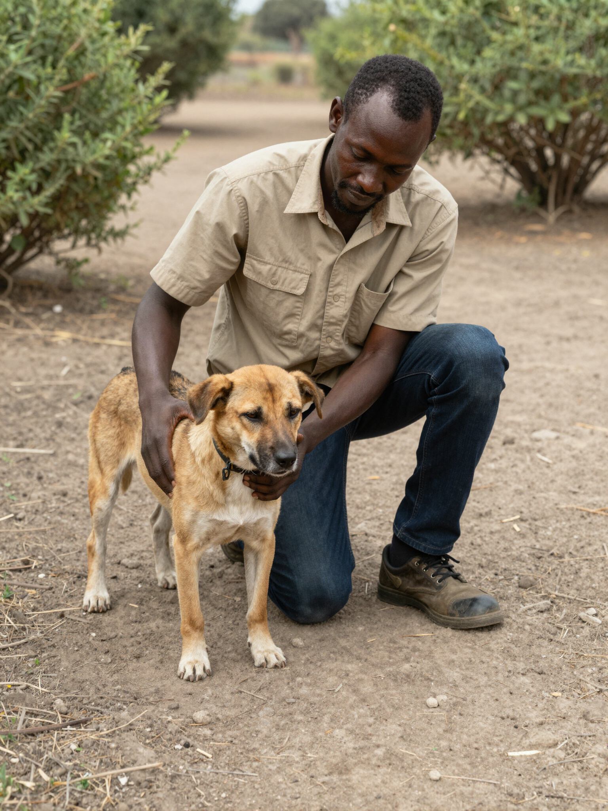

Reporting
Guidelines
Help us save lives by reporting stray animals and suspected rabies cases. Prompt and accurate reporting allows our team to coordinate immediate response.
- Exact location or GPS coordinates of the sighting
- Clear photos or videos of the animal from a safe distance
- Brief description of behavior (e.g., foaming, aggression)
- Your contact details for necessary partner follow-up

Report Stray Animals or Suspected
Rabies
Your information is critical. Please report stray animals or suspected rabies cases by sharing the location, images, and a brief description. Leave your contact details so ToCAWI or our local partners can coordinate a follow-up action. Together, we can keep the community safe.
ReportWhat Happens Next
Review Info
We carefully review every report to verify details and assess the situation for immediate safety needs.
Coordinate Partners
Our team coordinates with local veterinary clinics and partners to mobilize a humane response and support.
Advise Reporter
We offer clear advice on next steps for the reporter and give safety protocols for the community.
Log Case
Cases are logged to our database to help plan future mass vaccination drives and monitor rabies trends.
Frequently Asked Questions
When exactly should I use this reporting form?
Use this action page to report any stray animals that appear lost, ill, or display unusual behavior, as well as suspected cases of rabies. Every report helps ToCAWI identify clusters and plan future life-saving vaccination drives where they are needed most.
What should I do if the situation is an emergency?
Your safety is the priority. If an animal is posing an immediate threat to humans or has already bitten a person, contact local emergency or medical services first. This form is designed for logging cases for subsequent monitoring and expert guidance.
What happens if I am unable to upload any photos?
While photos help our team identify and assess the animal more quickly, a report is still highly valuable without them. Please provide a clear text description of the animal and its exact surroundings so our regional partners can coordinate accurately.
How will my report information and personal data be used?
Your contact details are used strictly by ToCAWI and our certified veterinary partners to follow up on your specific report. Incident data is aggregated anonymously to help us advocate for systemic changes and plan future community welfare drives.